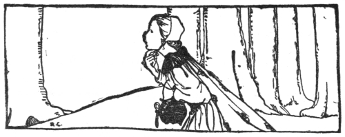
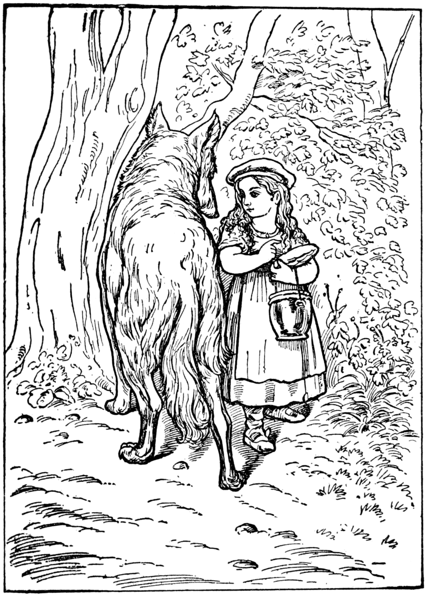
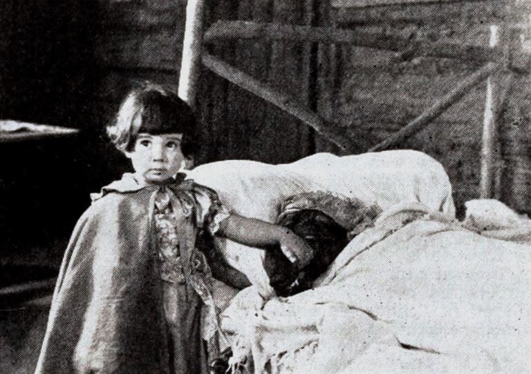

Little Red-Cap

Once upon a time, there was a sweet little girl, who was loved by every one who looked at her, and most of all by her Grandmother. There was nothing that she would not have given the child! Once she gave her a little cap of red velvet, which suited her so well that she would not wear anything else. So she was always called Little Red-Cap. One day, her Mother said to her, “Come, Little Red-Cap, here is a piece of cake and a bottle of wine. Take them to your Grandmother. She is ill and weak, and they will do her good. Set out before it gets hot. Walk nicely and quietly. Do not run off the path, or you may fall and break the bottle; then your Grandmother will get nothing! When you go into her room, don’t forget to say ‘Good morning,’ and don’t stop to peep into every corner, before you do it.”
“I’ll take great care,” said Little Red-Cap to her Mother, and gave her hand on it. The Grandmother lived in the wood, half an hour’s distance from the village, and just as Little Red-Cap entered the wood, a Wolf met her. Red-Cap did not know what a wicked creature he was, and was not at all afraid of him. “Good-day, Little Red-Cap,” said he. “Thank you kindly, Wolf.” “Whither away so early, Little Red-Cap?” “To my Grandmother’s.” “What have you got in your apron?” “Cake and wine. Yesterday was baking-day, so poor sick Grandmother is to have something good, to make her stronger.” “Where does your Grandmother live, Little Red-Cap?”
“A good quarter of an hour farther on in the wood. Her house stands under the three large oak-trees; the nut-trees are just below. You surely must know it,” replied Little Red-Cap. The Wolf thought to himself, “What a tender young creature! what a nice plump mouthful—she will be better to eat than the old woman. I must act craftily, so as to catch both.” He walked for a short time by the side of Little Red-Cap, and then he said, “See, Little Red-Cap, how pretty the flowers are about here—why do you not look round? I believe, too, that you do not hear how sweetly the little birds are singing. You walk gravely along as if you were going to school, while everything else in the wood is merry.”

Little Red-Cap raised her eyes, and when she saw the sunbeams dancing here and there through the trees, and pretty flowers growing everywhere, she thought, “Suppose I take Grandmother a fresh nosegay. That would please her too. It is so early in the day that I shall still get there in good time.” And so she ran from the path into the wood to look for flowers. And whenever she had picked one, she fancied that she saw a still prettier one farther on, and ran after it, and thus got deeper and deeper into the wood. Meanwhile, the Wolf ran straight to the Grandmother’s house and knocked at the door. “Who is there?” “Little Red-Cap,” replied the Wolf. “She is bringing cake and wine. Open the door.” “Lift the latch,” called out the Grandmother, “I am too weak, and cannot get up.” The Wolf lifted the latch, the door flew open, and without saying a word he went straight to the Grandmother’s bed, and devoured her. Then he put on her clothes, dressed himself in her cap, laid himself in bed, and drew the curtains.

Little Red-Cap, however, had been running about picking flowers. When she had gathered so many that she could carry no more, she remembered her Grandmother, and set out on the way to her. She was surprised to find the cottage-door standing open. And when she went into the room, she had such a strange feeling, that she said to herself, “Oh dear! how uneasy I feel to-day, and at other times I like being with Grandmother so much.”
She called out, “Good morning,” but received no answer. So she went to the bed and drew back the curtains. There lay her Grandmother with her cap pulled far over her face, and looking very strange. “Oh! Grandmother,” she said, “what big ears you have!” “The better to hear you with, my Child,” was the reply. “But, Grandmother, what big eyes you have!” she said. “The better to see you with, my dear.” “But, Grandmother, what large hands you have!” “The better to hug you with.” “Oh! but Grandmother, what a terrible big mouth you have!” “The better to eat you with!” And scarcely had the Wolf said this, than with one bound he was out of bed and swallowed up Red-Cap. When the Wolf had satisfied his appetite, he lay down again in the bed, fell asleep and began to snore very loud. The huntsman was just passing the house, and thought to himself, “How the old woman is snoring! I must just see if she wants anything.”
So he went into the room, and when he came to the bed, he saw the Wolf lying in it. “Do I find thee here, thou old sinner!” said he. “I have long sought thee!” Then just as he was going to fire at him, it occurred to him that the Wolf might have devoured the grandmother, and that she might still be saved. So he did not fire, but took a pair of scissors, and began to cut open the stomach of the sleeping Wolf.
When he had made two snips, he saw the little Red-Cap shining, and then he made two snips more, and the little girl sprang out, crying, “Ah, how frightened I have been! How dark it was inside the Wolf!” And after that the aged grandmother came out alive also, but scarcely able to breathe. Red-Cap then quickly fetched great stones with which they filled the Wolf’s body. And when he awoke, he wanted to run away, but the stones were so heavy that he tumbled down at once, and fell dead. Then all three were delighted. The huntsman drew off the Wolf’s skin and went home with it. The grandmother ate the cake and drank the wine which Red-Cap had brought, and grew strong again. But Red-Cap thought to herself, “As long as I live, I will never leave the path to run into the wood, when my mother has forbidden me to do so.”